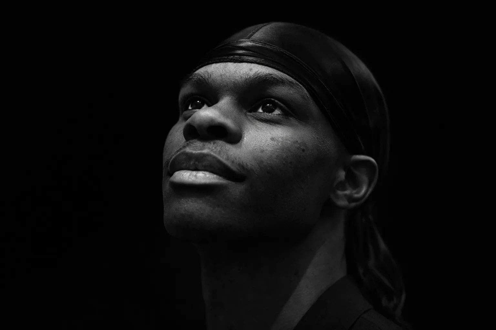

Om Mig

Beskrivelse af min uddannelse
Jeg læser Multimediedesign, hvor jeg arbejder med design og udvikling af digitale løsninger. Uddannelsen kombinerer visuel kommunikation, brugeroplevelse og grundlæggende programmering, og giver mig en forståelse for, hvordan design og teknik spiller sammen i praksis. Gennem projekter og opgaver har jeg arbejdet med HTML, CSS, grundlæggende JavaScript samt designprocesser som research, idéudvikling og prototyping.
Erhvervserfaring
Jeg har erfaring med projektarbejde og samarbejde i grupper, hvor struktur, kommunikation og ansvar har været i fokus. Gennem uddannelsen har jeg arbejdet med deadlines, procesdokumentation og præsentation af løsninger, hvilket har styrket min evne til at arbejde målrettet og organiseret. Derudover har jeg opnået erfaring med digitale værktøjer og kreative processer, som kan overføres direkte til arbejde med digitale projekter.
Derudover har jeg erfaring med videoredigering, hvor jeg redigerer dansevideoer til sociale medier som Instagram og TikTok. Jeg arbejder primært i DaVinci Resolve og CapCut og har opnået forståelse for klipning, tempo, visuel rytme og formidling til forskellige platforme. Denne erfaring har styrket mine kompetencer inden for visuel kommunikation og indholdsproduktion.
Hvad har jeg fået ud af mit 1. semester
Mit 1. semester har givet mig et solidt fundament inden for både design og webudvikling. Jeg har lært at tænke i brugere, struktur og funktionalitet, samt hvordan indhold, layout og interaktion tilsammen skaber en god brugeroplevelse.
Derudover har semesteret styrket min forståelse for arbejdsprocesser, samarbejde og hvordan man udvikler og præsenterer digitale løsninger fra idé til færdigt produkt.